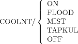

| 6.2. Postprocessor Commands with Parameters | ||
|---|---|---|
 | Chapter 6. Postprocessor Statements |  |
| 6.2. Postprocessor Commands with Parameters | ||
|---|---|---|
| | Chapter 6. Postprocessor Statements | |
Certain postprocessor words require additional information to convey any meaning to the processor. The general form is WORD/parameters, where the parameters are scalars, floating-point numbers, or vocabulary words. Examples of these parameters are
FEDRAT/ f
where f is a scalar or floating-point number. This statement indicates the desired feed rate that should be used for best finish, chip removal, etc. The actual feed rate will be as close to f as possible without exceeding the dynamic limitations of the machine tool (overshoot, synchronization, etc.).

The first four modifiers turn the coolant on in a variety of ways; the last modifier specifies that the coolant is to be turned off.
Four of the postprocessor words with modifiers affect other parts of the processor, in addition to the postprocessor. They are: MACHIN, INDEX, COPY, and TRACUT. A full discussion of these special words appears later in the manual.
The APT processor will allow any combination of vocabulary modifier words, floating-point numbers, arithmetic expressions, and scalar symbols as minor modifiers except where an alphanumeric string of characters or other restrictions are specified.
The following is a list of postprocessor words that require parameters, together with sample parameters that are used by many postprocessors.
![[Note]](images/note.png) | Note |
|---|---|
For a discussion of COPY, see Section 13.2 |
| Note |
|---|---|
For more on FEDRAT, see Section 6.4. |
INDEX/ i
| Note |
|---|---|
For a discussion of INDEX, see Section 13.2. |
INSERT Alphanumeric string of characters
MACHIN/ Name, n1, n2, etc.
Where Name is the appropriate postprocessor title (see Section 7.3.2).
PARTNO Alphanumeric string of characters
| Note |
|---|---|
For more on PARTNO, see Section 7.1.2. |
| Note |
|---|---|
For a discussion on TRACUT, see Chapter 13. |
VTLAXS/ n, ...
| Note |
|---|---|
For a discussion on VTLAXS, see Section 13.4. |
WCORN/ n, ...
| Note |
|---|---|
For a discussion on WCORN, see Section 13.4. |
| |  | |
| Chapter 6. Postprocessor Statements |  | 6.3. Fixed-Field Words |